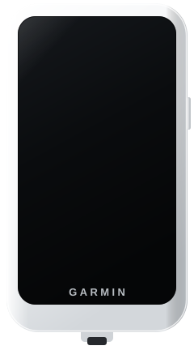

Your Di2 gear,
on the Edge Explore 2 screen
A free, unofficial data field that reads your Shimano Di2 over Bluetooth and shows the rear gear, a live cassette graphic and Di2 battery — no ANT+, no paywall.

Built to read at a glance, mid-ride
Everything sits in one data field — numbers, a graphic, or both. Nothing to tap, nothing to unlock.
Live cassette graphic
The rear cassette drawn as bars — biggest sprocket on the left, your current cog lit up. Read your position without parsing numbers.
Di2 battery
Wireless-unit charge as a colour-coded icon, a percentage, or both — orange under 40%, red under 15%.
Smart auto-reconnect
Keeps its Bluetooth bond between rides and relinks on its own the moment the Di2 is awake. No re-pairing after a short break.
Configurable drivetrain
Set your chainrings (1–3) and cassette, enter the teeth of each cog — accurate gear ratios and a true cassette profile.
Records to your ride
Per-second gears, teeth, ratio and battery to the FIT file, plus a summary: max ratio, max gear, minimum battery and shift counts.
Day / night · 6 languages
Adapts to the Edge Explore 2 colour theme. English, French, Spanish, Russian, German and Arabic out of the box.
A colour-coded dot tells you exactly what's happening
Add the field
Drop Di2 Field onto a data screen on your Edge Explore 2. There's no button — it's a data field.
Wake the Di2
Tap a shifter to wake the system. The field finds the nearest Di2 and connects on its own.
Ride
It sticks to your unit and reconnects automatically every ride. Switch bikes with one "Forget" toggle.
Every shift, written to your ride
While you ride, Di2 Field logs the whole drivetrain to the FIT activity — so Garmin Connect and any analysis tool can chart it afterwards. Field names match the app, in your language.
What you need
Connects to a Shimano wireless module advertising over Bluetooth LE — the native radio on your Edge Explore 2, no ANT+.
Put your Di2 on the screen
Install from the Connect IQ Store, add it to a data field, and ride.